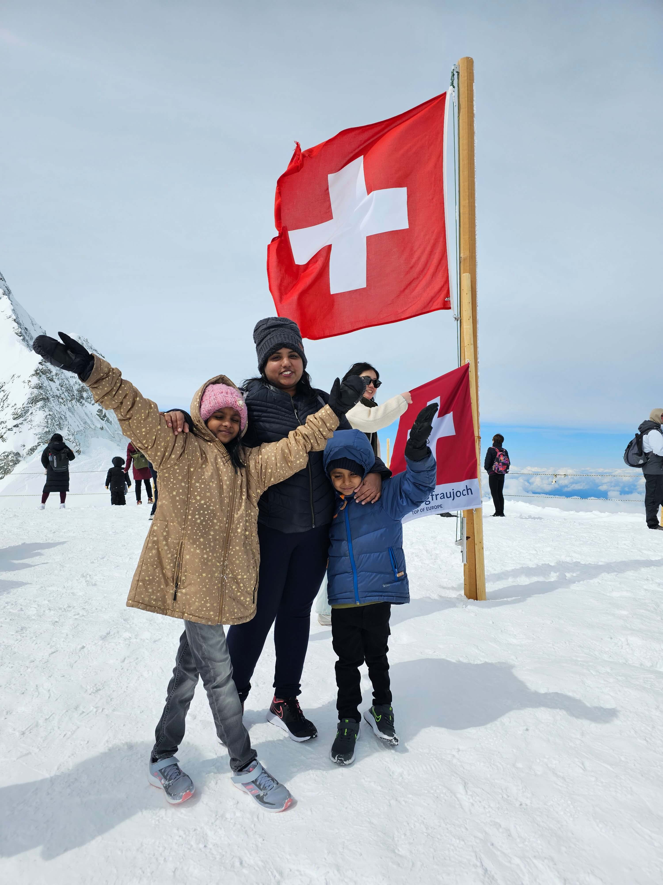

About Me
Hello and welcome to my blog!
I'm Prasanna, a passionate coder with a love for solving problems and building innovative solutions. With a solid background in Computer Science, I’m currently on the lookout for exciting new opportunities where I can contribute my skills and grow professionally. When I’m not immersed in code, I cherish spending time with my wonderful family of four Whether it’s exploring new hobbies together, embarking on family adventures, or simply enjoying quality time at home, they are my greatest source of inspiration and joy. This blog is a space where I share my journey in the tech world, insights on coding, and occasionally, snippets of life with my family. I’m excited to connect with fellow tech enthusiasts and anyone interested in the evolving landscape of technology. Thanks for stopping by, and I hope you find something here that resonates with you!
Family
Here is about my family. My husband, Ram,is working as a Storage engineer for a reputated consulting company. He has 15 years of solid technical experience in the infrasrtucture. My kids are Rithika and Ridhvin, also called as Lucky and Ricky. My Daughter is Studying 5th grade now in Hyderabad. She is very good at her studies and extra curricular activities as well. My Son is Studying 2nd grade in the same school where my daughter studies. He is energetic and happiest boy who admires me for everything with his cute gestures.
Apart from this I always love my extended family from my husband's side and my side like parents, in-laws, cousins, and siblings. Ofcourse parents are the foundation of my family, I always mind and take care of my parents and In-laws.
I have many friends until now, but I have to specially mention a family that lives in Oslo, Norway who are very kind and friendly towards me. We became friends in Oslo when we were staying there. Our friendship started in my daughter's school to make our kids to be friends but we became very close friends. After my family, It is a very healthy relationship in my life.
Unable to upload other family and friend's pictures as a precautionary.
Europe Trip
As part of my husband's long term assignment of his current working company we have been to Norway for almost 3 years. It was a great experience for me as I was always dreaming about to visit Kashmir to experience the snow, but I lived there for 3 winters in the coldest country. The Northern Lights are also a life time memory for me which I could experience multiple time in the city I was living. We have also been to few neighborhood countries like Denmark, Switzerland, France, Netharlands, Belgium and Italy. I'm grateful to experience the best tourist places in the world.
Here I would like to share few pictures and a video from our trips.



Contact
I will be waiting for your suggestions and appreciations on my posts. You can send those by filling the below form. I am glad and thanking you for joining me!!
Here you can find me and my work!